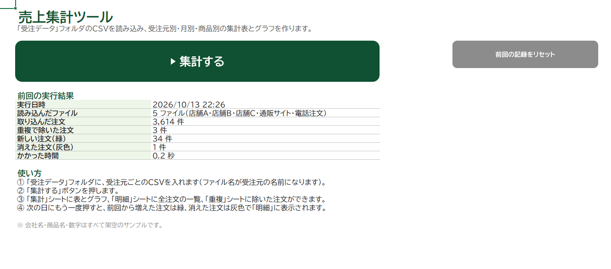
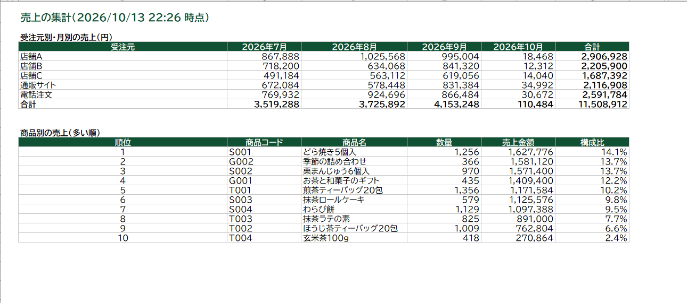
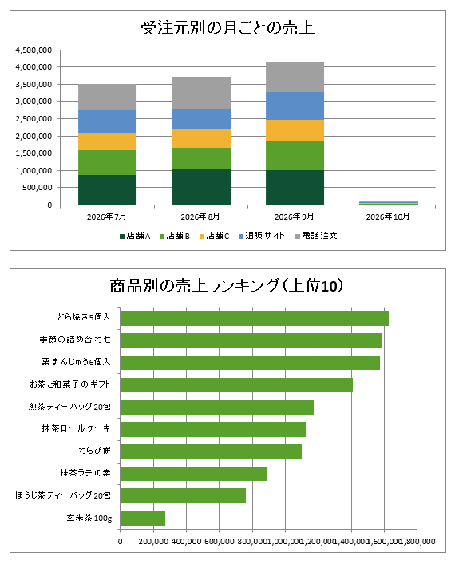
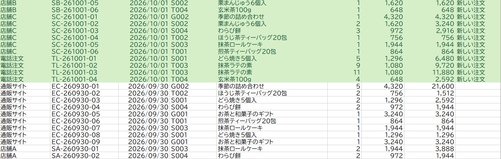
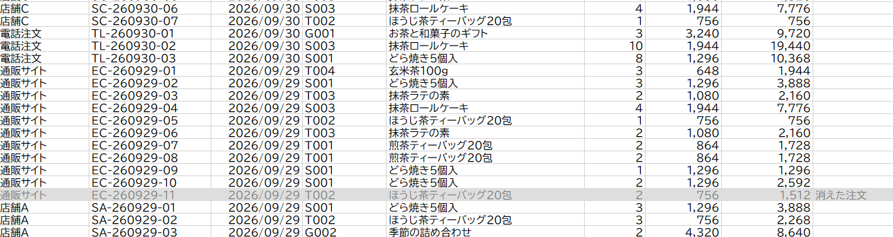
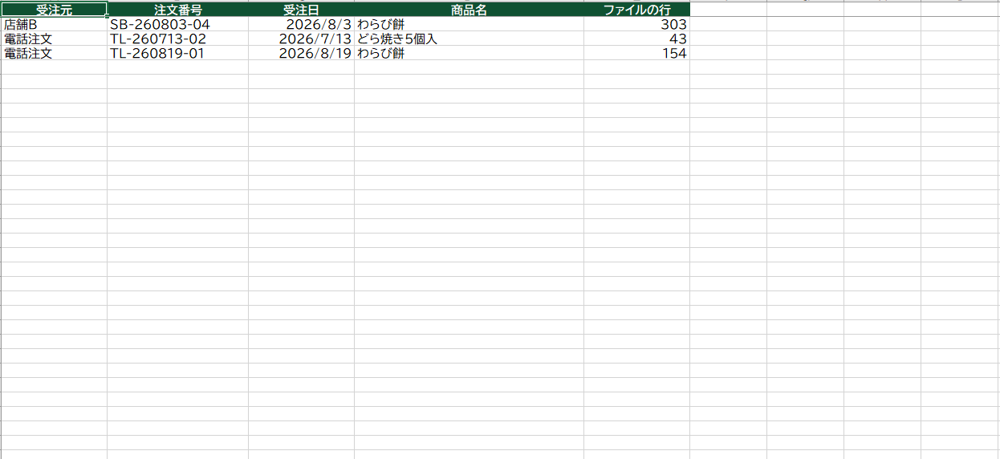

想定した依頼
「店舗・通販・電話の受注ファイルを毎朝ひとつずつ開いて貼り付けていて、集計に60分かかる。貼り付けミスもある」。営業提案書「Excel集計の自動化のご提案」で提案した仕組みを、実際に作った版です。
作ったもの
「集計する」ボタンを押すと、フォルダの中のCSVをすべて読み込み、次のものを自動で作ります。
- 受注元別・月別の売上表と、商品別の売上ランキング
- グラフ2つ（受注元別の月ごとの売上／商品別の売上）
- 全注文の一覧。前回と比べて、新しい注文は緑、消えた注文は灰色
- 二重に入っていた注文の一覧（どのファイルの何行目か）





工夫した点
- ファイルの形がちがっても読める：列の順番がちがう・文字コードがちがう（Shift_JIS／UTF-8）ファイルも、見出しの名前で列を探して読み込みます。
- ミスを見える形で残す：二重入力は自動で除いたうえで、どこにあったかを一覧に出します。キャンセルなどで消えた注文も灰色で残るので、見落としません。
- 担当者以外でも使える：操作はボタン1つ。フォルダの場所は「設定」シートで変えられ、コードを触る必要がありません。困ったときのメッセージもすべて日本語で表示します。
規模と制作時間
- 5ファイル・3,581件（3か月分）を 約0.5秒 で集計（手作業なら毎日約60分の想定）
- 機能：取り込み・重複チェック・集計表・グラフ2つ・前回との比較の5つ
- 制作：仕様決めから完成まで 約40分（AIと一緒に作成し、実際のExcelで動作確認）
見本ファイル
動かして試せる見本です（架空データ入り）。
こんなご依頼にも対応できます
- 毎日・毎月の売上や在庫の集計を、ボタン1つにしたい
- 複数のファイルやシステムから出したデータを、1つの表にまとめたい
- 今あるExcelマクロを直したい、使いやすくしたい
注意
会社名・商品名・数字はすべて架空のサンプルです。
ダウンロードしたファイルは、Windowsの設定でマクロが止められることがあります。ファイルを右クリック →「プロパティ」→「許可する」にチェックしてから開いてください。